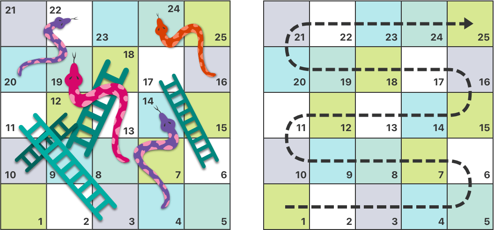
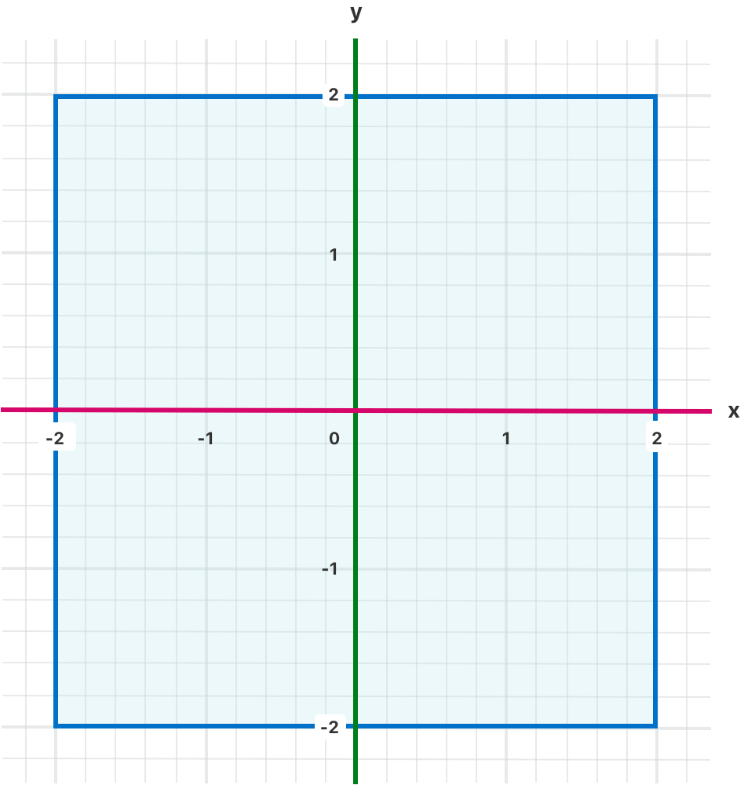
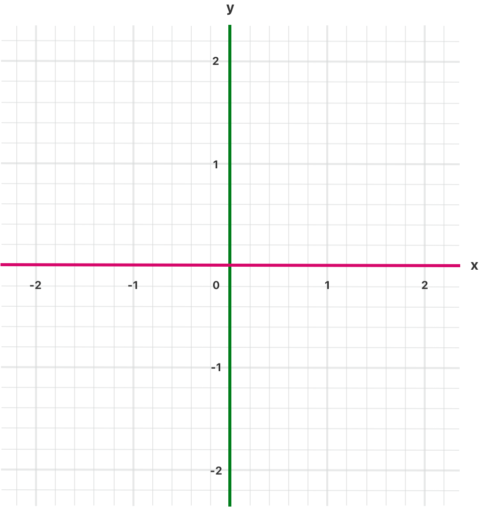
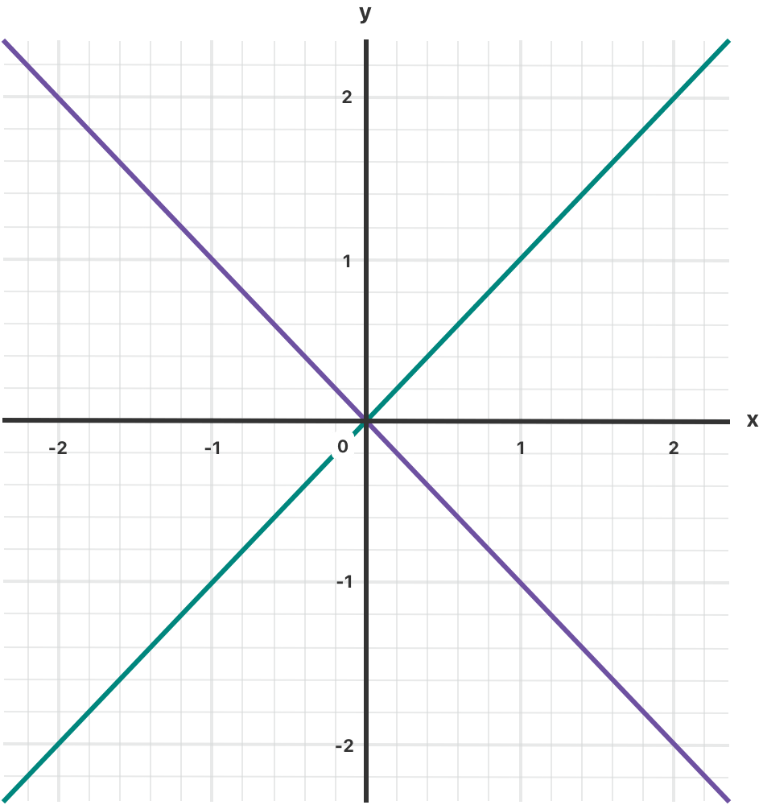

Swift 提供了多种流程控制结构，包括可以多次执行任务的 while 循环，基于特定条件选择执行不同代码分支的 if、guard 和 switch 语句，还有控制流程跳转到其他代码位置的 break 和 continue 语句。
Swift 还提供了 for-in 循环，用来更简单地遍历数组（Array），字典（Dictionary），区间（Range），字符串（String）和其他序列类型。
Swift 的 switch 语句比许多类 C 语言要更加强大。case 还可以匹配很多不同的模式，包括范围匹配，元组（tuple）和特定类型匹配。switch 语句的 case 中匹配的值可以声明为临时常量或变量，在 case 作用域内使用，也可以配合 where 来描述更复杂的匹配条件。
你可以使用 for-in 循环来遍历一个集合中的所有元素，例如数组中的元素、范围内的数字或者字符串中的字符。
以下例子使用 for-in 遍历一个数组所有元素：
xxxxxxxxxxlet names = ["Anna", "Alex", "Brian", "Jack"]for name in names { print("Hello, \(name)!")}// Hello, Anna!// Hello, Alex!// Hello, Brian!// Hello, Jack!你也可以通过遍历一个字典来访问它的键值对。遍历字典时，字典的每项元素会以 (key, value) 元组的形式返回，你可以在 for-in 循环中使用显式的常量名称来解读 (key, value) 元组。下面的例子中，字典的键会声明为 animalName 常量，字典的值会声明为 legCount 常量：
xxxxxxxxxxlet numberOfLegs = ["spider": 8, "ant": 6, "cat": 4]for (animalName, legCount) in numberOfLegs { print("\(animalName)s have \(legCount) legs")}// cats have 4 legs// ants have 6 legs// spiders have 8 legs字典的内容理论上是无序的，遍历元素时的顺序是无法确定的。将元素插入字典的顺序并不会决定它们被遍历的顺序。关于数组和字典的细节，参见 集合类型。
for-in 循环还可以使用数字范围。下面的例子用来输出乘法表的一部分内容：
xxxxxxxxxxfor index in 1...5 { print("\(index) times 5 is \(index * 5)")}// 1 times 5 is 5// 2 times 5 is 10// 3 times 5 is 15// 4 times 5 is 20// 5 times 5 is 25例子中用来进行遍历的元素是使用闭区间操作符（...）表示的从 1 到 5 的数字区间。index 被赋值为闭区间中的第一个数字（1），然后循环中的语句被执行一次。在本例中，这个循环只包含一个语句，用来输出当前 index 值所对应的乘 5 乘法表的结果。该语句执行后，index 的值被更新为闭区间中的第二个数字（2），之后 print(_:separator:terminator:) 函数会再执行一次。整个过程会进行到闭区间结尾为止。
上面的例子中，index 是一个每次循环遍历开始时被自动赋值的常量。这种情况下，index 在使用前不需要声明，只需要将它包含在循环的声明中，就可以对其进行隐式声明，而无需使用 let 关键字声明。
如果你不需要区间序列内每一项的值，你可以使用下划线（_）替代变量名来忽略这个值：
xxxxxxxxxxlet base = 3let power = 10var answer = 1for _ in 1...power { answer *= base}print("\(base) to the power of \(power) is \(answer)")// 输出“3 to the power of 10 is 59049”这个例子计算 base 这个数的 power 次幂（本例中，是 3 的 10 次幂），从 1（3 的 0 次幂）开始做 3 的乘法， 进行 10 次，使用 1 到 10 的闭区间循环。这个计算并不需要知道每一次循环中计数器具体的值，只需要执行了正确的循环次数即可。下划线符号 _ （替代循环中的变量）能够忽略当前值，并且不提供循环遍历时对值的访问。
在某些情况下，你可能不想使用包括两个端点的闭区间。想象一下，你在一个手表上绘制分钟的刻度线。总共 60 个刻度，从 0 分开始。使用半开区间运算符（..<）来表示一个左闭右开的区间。有关区间的更多信息，请参阅 区间运算符。
xxxxxxxxxxlet minutes = 60for tickMark in 0..<minutes { // 每一分钟都渲染一个刻度线（60次）}一些用户可能在其 UI 中可能需要较少的刻度。他们可以每 5 分钟作为一个刻度。使用 stride(from:to:by:) 函数跳过不需要的标记。
xxxxxxxxxxlet minuteInterval = 5for tickMark in stride(from: 0, to: minutes, by: minuteInterval) { // 每5分钟渲染一个刻度线（0, 5, 10, 15 ... 45, 50, 55）}可以在闭区间使用 stride(from:through:by:) 起到同样作用：
xxxxxxxxxxlet hours = 12let hourInterval = 3for tickMark in stride(from: 3, through: hours, by: hourInterval) { // 每3小时渲染一个刻度线（3, 6, 9, 12）}以上示例使用 for-in 循环来遍历范围、数组、字典和字符串。你可以用它来遍历任何的集合，包括实现了 Sequence 协议的自定义类或集合类型。
while 循环会一直运行一段语句直到条件变成 false。这类循环适合使用在第一次迭代前，迭代次数未知的情况下。Swift 提供两种 while 循环形式：
while 循环，每次在循环开始时计算条件是否符合；repeat-while 循环，每次在循环结束时计算条件是否符合。while 循环从计算一个条件开始。如果条件为 true，会重复运行一段语句，直到条件变为 false。
下面是 while 循环的一般格式：
xxxxxxxxxxwhile condition { statements}下面的例子来玩一个叫做蛇和梯子（也叫做滑道和梯子）的小游戏：

游戏的规则如下：
游戏盘面可以使用一个 Int 数组来表达。数组的长度由一个 finalSquare 常量储存，用来初始化数组和检测最终胜利条件。游戏盘面由 26 个 Int 0 值初始化，而不是 25 个（由 0 到 25，一共 26 个）：
xxxxxxxxxxlet finalSquare = 25var board = [Int](repeating: 0, count: finalSquare + 1)一些方格被设置成特定的值来表示有蛇或者梯子。梯子底部的方格是一个正值，使你可以向上移动，蛇头处的方格是一个负值，会让你向下移动：
xxxxxxxxxxboard[03] = +08; board[06] = +11; board[09] = +09; board[10] = +02board[14] = -10; board[19] = -11; board[22] = -02; board[24] = -083 号方格是梯子的底部，会让你向上移动到 11 号方格，我们使用 board[03] 等于 +08（来表示 11 和 3 之间的差值）。为了对齐语句，这里使用了一元正运算符（+i）和一元负运算符（-i），并且小于 10 的数字都使用 0 补齐（这些语法的技巧不是必要的，只是为了让代码看起来更加整洁）。
玩家由左下角空白处编号为 0 的方格开始游戏。玩家第一次掷骰子后才会进入游戏盘面：
xxxxxxxxxxvar square = 0var diceRoll = 0while square < finalSquare { // 掷骰子 diceRoll += 1 if diceRoll == 7 { diceRoll = 1 } // 根据点数移动 square += diceRoll if square < board.count { // 如果玩家还在棋盘上，顺着梯子爬上去或者顺着蛇滑下去 square += board[square] }}print("Game over!")本例中使用了最简单的方法来模拟掷骰子。diceRoll 的值并不是一个随机数，而是以 0 为初始值，之后每一次 while 循环，diceRoll 的值增加 1 ，然后检测是否超出了最大值。当 diceRoll 的值等于 7 时，就超过了骰子的最大值，会被重置为 1。所以 diceRoll 的取值顺序会一直是 1，2，3，4，5，6，1，2 等。
掷完骰子后，玩家向前移动 diceRoll 个方格，如果玩家移动超过了第 25 个方格，这个时候游戏将会结束，为了应对这种情况，代码会首先判断 square 的值是否小于 board 的 count 属性，只有小于才会在 board[square] 上增加 square，来向前或向后移动（遇到了梯子或者蛇）。
注意
如果没有这个检测（
square < board.count），board[square]可能会越界访问board数组，导致运行时错误。
当本轮 while 循环运行完毕，会再检测循环条件是否需要再运行一次循环。如果玩家移动到或者超过第 25 个方格，循环条件结果为 false，此时游戏结束。
while 循环比较适合本例中的这种情况，因为在 while 循环开始时，我们并不知道游戏要跑多久，只有在达成指定条件时循环才会结束。
while 循环的另外一种形式是 repeat-while，它和 while 的区别是在判断循环条件之前，先执行一次循环的代码块。然后重复循环直到条件为 false。
注意
Swift 语言的
repeat-while循环和其他语言中的do-while循环是类似的。
下面是 repeat-while 循环的一般格式：
xxxxxxxxxxrepeat { statements} while condition还是蛇和梯子的游戏，使用 repeat-while 循环来替代 while 循环。finalSquare、board、square 和 diceRoll 的值初始化同 while 循环时一样：
xxxxxxxxxxlet finalSquare = 25var board = [Int](repeating: 0, count: finalSquare + 1)board[03] = +08; board[06] = +11; board[09] = +09; board[10] = +02board[14] = -10; board[19] = -11; board[22] = -02; board[24] = -08var square = 0var diceRoll = 0repeat-while 的循环版本，循环中第一步就需要去检测是否在梯子或者蛇的方块上。没有梯子会让玩家直接上到第 25 个方格，所以玩家不会通过梯子直接赢得游戏。这样在循环开始时先检测是否踩在梯子或者蛇上是安全的。
游戏开始时，玩家在第 0 个方格上，board[0] 一直等于 0， 不会有什么影响：
xxxxxxxxxxrepeat { // 顺着梯子爬上去或者顺着蛇滑下去 square += board[square] // 掷骰子 diceRoll += 1 if diceRoll == 7 { diceRoll = 1 } // 根据点数移动 square += diceRoll} while square < finalSquareprint("Game over!")检测完玩家是否踩在梯子或者蛇上之后，开始掷骰子，然后玩家向前移动 diceRoll 个方格，本轮循环结束。
循环条件（while square < finalSquare）和 while 方式相同，但是只会在循环结束后进行计算。在这个游戏中，repeat-while 表现得比 while 循环更好。repeat-while 方式会在条件判断 square 没有超出后直接运行 square += board[square]，这种方式可以比起前面 while 循环的版本，可以省去数组越界的检查。
根据特定的条件执行特定的代码通常是十分有用的。当错误发生时，你可能想运行额外的代码；或者，当值太大或太小时，向用户显示一条消息。要实现这些功能，你就需要使用条件语句。
Swift 提供两种类型的条件语句：if 语句和 switch 语句。通常，当条件较为简单且可能的情况很少时，使用 if 语句。而 switch 语句更适用于条件较复杂、有更多排列组合的时候。并且 switch 在需要用到模式匹配（pattern-matching）的情况下会更有用。
if 语句最简单的形式就是只包含一个条件，只有该条件为 true 时，才执行相关代码：
xxxxxxxxxxvar temperatureInFahrenheit = 30if temperatureInFahrenheit <= 32 { print("It's very cold. Consider wearing a scarf.")}// 输出“It's very cold. Consider wearing a scarf.”上面的例子会判断温度是否小于等于 32 华氏度（水的冰点）。如果是，则打印一条消息；否则，不打印任何消息，继续执行 if 块后面的代码。
当然，if 语句允许二选一执行，叫做 else 从句。也就是当条件为 false 时，执行 else 语句：
xxxxxxxxxxtemperatureInFahrenheit = 40if temperatureInFahrenheit <= 32 { print("It's very cold. Consider wearing a scarf.")} else { print("It's not that cold. Wear a t-shirt.")}// 输出“It's not that cold. Wear a t-shirt.”显然，这两条分支中总有一条会被执行。由于温度已升至 40 华氏度，不算太冷，没必要再围围巾。因此，else 分支就被触发了。
你可以把多个 if 语句链接在一起，来实现更多分支：
xxxxxxxxxxtemperatureInFahrenheit = 90if temperatureInFahrenheit <= 32 { print("It's very cold. Consider wearing a scarf.")} else if temperatureInFahrenheit >= 86 { print("It's really warm. Don't forget to wear sunscreen.")} else { print("It's not that cold. Wear a t-shirt.")}// 输出“It's really warm. Don't forget to wear sunscreen.”在上面的例子中，额外的 if 语句用于判断是不是特别热。而最后的 else 语句被保留了下来，用于打印既不冷也不热时的消息。
实际上，当不需要完整判断情况的时候，最后的 else 语句是可选的：
xxxxxxxxxxtemperatureInFahrenheit = 72if temperatureInFahrenheit <= 32 { print("It's very cold. Consider wearing a scarf.")} else if temperatureInFahrenheit >= 86 { print("It's really warm. Don't forget to wear sunscreen.")}在这个例子中，由于既不冷也不热，所以不会触发 if 或 else if 分支，也就不会打印任何消息。
switch 语句会尝试把某个值与若干个模式（pattern）进行匹配。根据第一个匹配成功的模式，switch 语句会执行对应的代码。当有可能的情况较多时，通常用 switch 语句替换 if 语句。
switch 语句最简单的形式就是把某个值与一个或若干个相同类型的值作比较：
xxxxxxxxxxswitch some value to consider {case value 1: respond to value 1case value 2, value 3: respond to value 2 or 3default: otherwise, do something else}switch 语句由多个 case 构成，每个由 case 关键字开始。为了匹配某些更特定的值，Swift 提供了几种方法来进行更复杂的模式匹配，这些模式将在本节的稍后部分提到。
与 if 语句类似，每一个 case 都是代码执行的一条分支。switch 语句会决定哪一条分支应该被执行，这个流程被称作根据给定的值切换（switching）。
switch 语句必须是完备的。这就是说，每一个可能的值都必须至少有一个 case 分支与之对应。在某些不可能涵盖所有值的情况下，你可以使用默认（default）分支来涵盖其它所有没有对应的值，这个默认分支必须在 switch 语句的最后面。
下面的例子使用 switch 语句来匹配一个名为 someCharacter 的小写字符：
xxxxxxxxxxlet someCharacter: Character = "z"switch someCharacter {case "a": print("The first letter of the alphabet")case "z": print("The last letter of the alphabet")default: print("Some other character")}// 输出“The last letter of the alphabet”在这个例子中，第一个 case 分支用于匹配第一个英文字母 a，第二个 case 分支用于匹配最后一个字母 z。因为 switch 语句必须有一个 case 分支用于覆盖所有可能的字符，而不仅仅是所有的英文字母，所以 switch 语句使用 default 分支来匹配除了 a 和 z 外的所有值，这个分支保证了 switch 语句的完备性。
与 C 和 Objective-C 中的 switch 语句不同，在 Swift 中，当匹配的 case 分支中的代码执行完毕后，程序会终止 switch 语句，而不会继续执行下一个 case 分支。这也就是说，不需要在 case 分支中显式地使用 break 语句。这使得 switch 语句更安全、更易用，也避免了漏写 break 语句导致多个语言被执行的错误。
注意
虽然在 Swift 中
break不是必须的，但你依然可以在 case 分支中的代码执行完毕前使用break跳出，详情请参见 Switch 语句中的 break。
每一个 case 分支都必须包含至少一条语句。像下面这样书写代码是无效的，因为第一个 case 分支是空的：
xxxxxxxxxxlet anotherCharacter: Character = "a"switch anotherCharacter {case "a": // 无效，这个分支下面没有语句case "A": print("The letter A")default: print("Not the letter A")}// 这段代码会报编译错误不像 C 语言里的 switch 语句，在 Swift 中，switch 语句不会一起匹配 "a" 和 "A"。相反的，上面的代码会引起编译期错误：case "a": 不包含任何可执行语句——这就避免了意外地从一个 case 分支贯穿到另外一个，使得代码更安全、也更直观。
为了让单个 case 同时匹配 a 和 A，可以将这个两个值组合成一个复合匹配，并且用逗号分开：
xxxxxxxxxxlet anotherCharacter: Character = "a"switch anotherCharacter {case "a", "A": print("The letter A")default: print("Not the letter A")}// 输出“The letter A”为了可读性，符合匹配可以写成多行形式，详情请参考 复合匹配。
注意
如果想要显式贯穿 case 分支，请使用
fallthrough语句，详情请参考 贯穿。
case 分支的模式也可以是一个值的区间。下面的例子展示了如何使用区间匹配来输出任意数字对应的自然语言格式：
xxxxxxxxxxlet approximateCount = 62let countedThings = "moons orbiting Saturn"let naturalCount: Stringswitch approximateCount {case 0: naturalCount = "no"case 1..<5: naturalCount = "a few"case 5..<12: naturalCount = "several"case 12..<100: naturalCount = "dozens of"case 100..<1000: naturalCount = "hundreds of"default: naturalCount = "many"}print("There are \(naturalCount) \(countedThings).")// 输出“There are dozens of moons orbiting Saturn.”在上例中，approximateCount 在一个 switch 声明中被评估。每一个 case 都与之进行比较。因为 approximateCount 落在了 12 到 100 的区间，所以 naturalCount 等于 "dozens of" 值，并且此后的执行跳出了 switch 语句。
我们可以使用元组在同一个 switch 语句中测试多个值。元组中的元素可以是值，也可以是区间。另外，使用下划线（_）来匹配所有可能的值。
下面的例子展示了如何使用一个 (Int, Int) 类型的元组来分类下图中的点 (x, y)：
xxxxxxxxxxlet somePoint = (1, 1)switch somePoint {case (0, 0): print("\(somePoint) is at the origin")case (_, 0): print("\(somePoint) is on the x-axis")case (0, _): print("\(somePoint) is on the y-axis")case (-2...2, -2...2): print("\(somePoint) is inside the box")default: print("\(somePoint) is outside of the box")}// 输出“(1, 1) is inside the box”
在上面的例子中，switch 语句会判断某个点是否是原点 (0, 0)，是否在红色的 x 轴上，是否在橘黄色的 y 轴上，是否在一个以原点为中心的4x4的蓝色矩形里，或者在这个矩形外面。
不像 C 语言，Swift 允许多个 case 匹配同一个值。实际上，在这个例子中，四个 case 都可以匹配点 (0, 0) 。但是，如果存在多个匹配，那么只会执行第一个被匹配到的 case 分支。考虑点 (0, 0)会首先匹配 case (0, 0)，因此剩下的能够匹配的分支都会被忽视掉。
case 分支允许将匹配的值声明为临时常量或变量，并且在 case 分支体内使用 —— 这种行为被称为值绑定（value binding），因为匹配的值在 case 分支体内，与临时的常量或变量绑定。
下面的例子将下图中的点 (x, y)，使用 (Int, Int) 类型的元组表示，然后分类表示：
xxxxxxxxxxlet anotherPoint = (2, 0)switch anotherPoint {case (let x, 0): print("on the x-axis with an x value of \(x)")case (0, let y): print("on the y-axis with a y value of \(y)")case let (x, y): print("somewhere else at (\(x), \(y))")}// 输出“on the x-axis with an x value of 2”
在上面的例子中，switch 语句会判断某个点是否在红色的 x 轴上，是否在橘黄色的 y 轴上，或者不在坐标轴上。
这三个 case 都声明了常量 x 和 y 的占位符，用于临时获取元组 anotherPoint 的一个或两个值。第一个 case ——case (let x, 0) 将匹配一个纵坐标为 0 的点，并把这个点的横坐标赋给临时的常量 x。类似的，第二个 case ——case (0, let y) 将匹配一个横坐标为 0 的点，并把这个点的纵坐标赋给临时的常量 y。
一旦声明了这些临时的常量，它们就可以在其对应的 case 分支里使用。在这个例子中，它们用于打印给定点的类型。
请注意，这个 switch 语句不包含默认分支。这是因为最后一个 case ——case let(x, y) 声明了一个可以匹配余下所有值的元组。这使得 switch 语句已经完备了，因此不需要再书写默认分支。
case 分支的模式可以使用 where 语句来判断额外的条件。
下面的例子把下图中的点 (x, y)进行了分类：
xxxxxxxxxxlet yetAnotherPoint = (1, -1)switch yetAnotherPoint {case let (x, y) where x == y: print("(\(x), \(y)) is on the line x == y")case let (x, y) where x == -y: print("(\(x), \(y)) is on the line x == -y")case let (x, y): print("(\(x), \(y)) is just some arbitrary point")}// 输出“(1, -1) is on the line x == -y”
在上面的例子中，switch 语句会判断某个点是否在绿色的对角线 x == y 上，是否在紫色的对角线 x == -y 上，或者不在对角线上。
这三个 case 都声明了常量 x 和 y 的占位符，用于临时获取元组 yetAnotherPoint 的两个值。这两个常量被用作 where 语句的一部分，从而创建一个动态的过滤器（filter）。当且仅当 where 语句的条件为 true 时，匹配到的 case 分支才会被执行。
就像是值绑定中的例子，由于最后一个 case 分支匹配了余下所有可能的值，switch 语句就已经完备了，因此不需要再书写默认分支。
当多个条件可以使用同一种方法来处理时，可以将这几种可能放在同一个 case 后面，并且用逗号隔开。当 case 后面的任意一种模式匹配的时候，这条分支就会被匹配。并且，如果匹配列表过长，还可以分行书写：
xxxxxxxxxxlet someCharacter: Character = "e"switch someCharacter {case "a", "e", "i", "o", "u": print("\(someCharacter) is a vowel")case "b", "c", "d", "f", "g", "h", "j", "k", "l", "m", "n", "p", "q", "r", "s", "t", "v", "w", "x", "y", "z": print("\(someCharacter) is a consonant")default: print("\(someCharacter) is not a vowel or a consonant")}// 输出“e is a vowel”这个 switch 语句中的第一个 case，匹配了英语中的五个小写元音字母。相似的，第二个 case 匹配了英语中所有的小写辅音字母。最终，default 分支匹配了其它所有字符。
复合匹配同样可以包含值绑定。复合匹配里所有的匹配模式，都必须包含相同的值绑定。并且每一个绑定都必须获取到相同类型的值。这保证了，无论复合匹配中的哪个模式发生了匹配，分支体内的代码，都能获取到绑定的值，并且绑定的值都有一样的类型。
xxxxxxxxxxlet stillAnotherPoint = (9, 0)switch stillAnotherPoint {case (let distance, 0), (0, let distance): print("On an axis, \(distance) from the origin")default: print("Not on an axis")}// 输出“On an axis, 9 from the origin”上面的 case 有两个模式：(let distance, 0) 匹配了在 x 轴上的值，(0, let distance) 匹配了在 y 轴上的值。两个模式都绑定了 distance，并且 distance 在两种模式下，都是整型——这意味着分支体内的代码，只要 case 匹配，都可以获取到 distance 值。
控制转移语句改变你代码的执行顺序，通过它可以实现代码的跳转。Swift 有五种控制转移语句：
continuebreakfallthroughreturnthrow我们将会在下面讨论 continue、break 和 fallthrough 语句。return 语句将会在 函数 章节讨论，throw 语句会在 错误抛出 章节讨论。
continue 语句告诉一个循环体立刻停止本次循环，重新开始下次循环。就好像在说“本次循环我已经执行完了”，但是并不会离开整个循环体。
下面的例子把一个小写字符串中的元音字母和空格字符移除，生成了一个含义模糊的短句：
xxxxxxxxxxlet puzzleInput = "great minds think alike"var puzzleOutput = ""for character in puzzleInput { switch character { case "a", "e", "i", "o", "u", " ": continue default: puzzleOutput.append(character) }}print(puzzleOutput) // 输出“grtmndsthnklk”在上面的代码中，只要匹配到元音字母或者空格字符，就调用 continue 语句，使本次循环结束，重新开始下次循环。这种行为使 switch 匹配到元音字母和空格字符时不做处理，而不是让每一个匹配到的字符都被打印。
break 语句会立刻结束整个控制流的执行。break 可以在 switch 或循环语句中使用，用来提前结束 switch 或循环语句。
当在一个循环体中使用 break 时，会立刻中断该循环体的执行，然后跳转到表示循环体结束的大括号（}）后的第一行代码。不会再有本次循环的代码被执行，也不会再有下次的循环产生。
当在一个 switch 代码块中使用 break 时，会立即中断该 switch 代码块的执行，并且跳转到表示 switch 代码块结束的大括号（}）后的第一行代码。
这种特性可以被用来匹配或者忽略一个或多个分支。因为 Swift 的 switch 需要包含所有的分支而且不允许有为空的分支，有时为了使你的意图更明显，需要特意匹配或者忽略某个分支。那么当你想忽略某个分支时，可以在该分支内写上 break 语句。当那个分支被匹配到时，分支内的 break 语句立即结束 switch 代码块。
注意
当一个
switch分支仅仅包含注释时，会被报编译时错误。注释不是代码语句而且也不能让switch分支达到被忽略的效果。你应该使用break来忽略某个分支。
下面的例子通过 switch 来判断一个 Character 值是否代表下面四种语言之一。为了简洁，多个值被包含在了同一个分支情况中。
xxxxxxxxxxlet numberSymbol: Character = "三" // 简体中文里的数字 3var possibleIntegerValue: Int?switch numberSymbol {case "1", "١", "一", "๑": possibleIntegerValue = 1case "2", "٢", "二", "๒": possibleIntegerValue = 2case "3", "٣", "三", "๓": possibleIntegerValue = 3case "4", "٤", "四", "๔": possibleIntegerValue = 4default: break}if let integerValue = possibleIntegerValue { print("The integer value of \(numberSymbol) is \(integerValue).")} else { print("An integer value could not be found for \(numberSymbol).")}// 输出“The integer value of 三 is 3.”这个例子检查 numberSymbol 是否是拉丁，阿拉伯，中文或者泰语中的 1 到 4 之一。如果被匹配到，该 switch 分支语句给 Int? 类型变量 possibleIntegerValue 设置一个整数值。
当 switch 代码块执行完后，接下来的代码通过使用可选绑定来判断 possibleIntegerValue 是否曾经被设置过值。因为是可选类型的缘故，possibleIntegerValue 有一个隐式的初始值 nil，所以仅仅当 possibleIntegerValue 曾被 switch 代码块的前四个分支中的某个设置过一个值时，可选的绑定才会被判定为成功。
在上面的例子中，想要把 Character 所有的的可能性都枚举出来是不现实的，所以使用 default 分支来包含所有上面没有匹配到字符的情况。由于这个 default 分支不需要执行任何动作，所以它只写了一条 break 语句。一旦落入到 default 分支中后，break 语句就完成了该分支的所有代码操作，代码继续向下，开始执行 if let 语句。
在 Swift 里，switch 语句不会从上一个 case 分支跳转到下一个 case 分支中。相反，只要第一个匹配到的 case 分支完成了它需要执行的语句，整个 switch 代码块完成了它的执行。相比之下，C 语言要求你显式地插入 break 语句到每个 case 分支的末尾来阻止自动落入到下一个 case 分支中。Swift 的这种避免默认落入到下一个分支中的特性意味着它的 switch 功能要比 C 语言的更加清晰和可预测，可以避免无意识地执行多个 case 分支从而引发的错误。
如果你确实需要 C 风格的贯穿的特性，你可以在每个需要该特性的 case 分支中使用 fallthrough 关键字。下面的例子使用 fallthrough 来创建一个数字的描述语句。
xxxxxxxxxxlet integerToDescribe = 5var description = "The number \(integerToDescribe) is"switch integerToDescribe {case 2, 3, 5, 7, 11, 13, 17, 19: description += " a prime number, and also" fallthroughdefault: description += " an integer."}print(description)// 输出“The number 5 is a prime number, and also an integer.”这个例子定义了一个 String 类型的变量 description 并且给它设置了一个初始值。函数使用 switch 逻辑来判断 integerToDescribe 变量的值。当 integerToDescribe 的值属于列表中的质数之一时，该函数在 description 后添加一段文字，来表明这个数字是一个质数。然后它使用 fallthrough 关键字来“贯穿”到 default 分支中。default 分支在 description 的最后添加一段额外的文字，至此 switch 代码块执行完了。
如果 integerToDescribe 的值不属于列表中的任何质数，那么它不会匹配到第一个 switch 分支。而这里没有其他特别的分支情况，所以 integerToDescribe 匹配到 default 分支中。
当 switch 代码块执行完后，使用 print(_:separator:terminator:) 函数打印该数字的描述。在这个例子中，数字 5 被准确的识别为了一个质数。
注意
fallthrough关键字不会检查它下一个将会落入执行的 case 中的匹配条件。fallthrough简单地使代码继续连接到下一个 case 中的代码，这和 C 语言标准中的switch语句特性是一样的。
在 Swift 中，你可以在循环体和条件语句中嵌套循环体和条件语句来创造复杂的控制流结构。并且，循环体和条件语句都可以使用 break 语句来提前结束整个代码块。因此，显式地指明 break 语句想要终止的是哪个循环体或者条件语句，会很有用。类似地，如果你有许多嵌套的循环体，显式指明 continue 语句想要影响哪一个循环体也会非常有用。
为了实现这个目的，你可以使用标签（statement label）来标记一个循环体或者条件语句，对于一个条件语句，你可以使用 break 加标签的方式，来结束这个被标记的语句。对于一个循环语句，你可以使用 break 或者 continue 加标签，来结束或者继续这条被标记语句的执行。
声明一个带标签的语句是通过在该语句的关键词的同一行前面放置一个标签，作为这个语句的前导关键字（introducer keyword），并且该标签后面跟随一个冒号。下面是一个针对 while 循环体的标签语法，同样的规则适用于所有的循环体和条件语句。
xxxxxxxxxx label name: while condition { statements }下面的例子是前面章节中蛇和梯子的适配版本，在此版本中，我们将使用一个带有标签的 while 循环体中调用 break 和 continue 语句。这次，游戏增加了一条额外的规则：
如果某次掷骰子使你的移动超出第 25 个方块，你必须重新掷骰子，直到你掷出的骰子数刚好使你能落在第 25 个方块中。
游戏的棋盘和之前一样：
finalSquare、board、square 和 diceRoll 值被和之前一样的方式初始化：
xxxxxxxxxxlet finalSquare = 25var board = [Int](repeating: 0, count: finalSquare + 1)board[03] = +08; board[06] = +11; board[09] = +09; board[10] = +02board[14] = -10; board[19] = -11; board[22] = -02; board[24] = -08var square = 0var diceRoll = 0这个版本的游戏使用 while 循环和 switch 语句来实现游戏的逻辑。while 循环有一个标签名 gameLoop，来表明它是游戏的主循环。
该 while 循环体的条件判断语句是 while square !=finalSquare，这表明你必须刚好落在方格25中。
xxxxxxxxxxgameLoop: while square != finalSquare { diceRoll += 1 if diceRoll == 7 { diceRoll = 1 } switch square + diceRoll { case finalSquare: // 骰子数刚好使玩家移动到最终的方格里，游戏结束。 break gameLoop case let newSquare where newSquare > finalSquare: // 骰子数将会使玩家的移动超出最后的方格，那么这种移动是不合法的，玩家需要重新掷骰子 continue gameLoop default: // 合法移动，做正常的处理 square += diceRoll square += board[square] }}print("Game over!")每次循环迭代开始时掷骰子。与之前玩家掷完骰子就立即移动不同，这里使用了 switch 语句来考虑每次移动可能产生的结果，从而决定玩家本次是否能够移动。
break gameLoop 语句跳转控制去执行 while 循环体后的第一行代码，意味着游戏结束。continue gameLoop 语句结束本次 while 循环，开始下一次循环。diceRoll 个方格，然后游戏逻辑再处理玩家当前是否处于蛇头或者梯子的底部。接着本次循环结束，控制跳转到 while 循环体的条件判断语句处，再决定是否需要继续执行下次循环。注意
如果上述的
break语句没有使用gameLoop标签，那么它将会中断switch语句而不是while循环。使用gameLoop标签清晰的表明了break想要中断的是哪个代码块。同时请注意，当调用
continue gameLoop去跳转到下一次循环迭代时，这里使用gameLoop标签并不是严格必须的。因为在这个游戏中，只有一个循环体，所以continue语句会影响到哪个循环体是没有歧义的。然而，continue语句使用gameLoop标签也是没有危害的。这样做符合标签的使用规则，同时参照旁边的break gameLoop，能够使游戏的逻辑更加清晰和易于理解。
像 if 语句一样，guard 的执行取决于一个表达式的布尔值。我们可以使用 guard 语句来要求条件必须为真时，以执行 guard 语句后的代码。不同于 if 语句，一个 guard 语句总是有一个 else 从句，如果条件不为真则执行 else 从句中的代码。
xfunc greet(person: [String: String]) { guard let name = person["name"] else { return }
print("Hello \(name)!")
guard let location = person["location"] else { print("I hope the weather is nice near you.") return }
print("I hope the weather is nice in \(location).")}
greet(person: ["name": "John"])// 输出“Hello John!”// 输出“I hope the weather is nice near you.”greet(person: ["name": "Jane", "location": "Cupertino"])// 输出“Hello Jane!”// 输出“I hope the weather is nice in Cupertino.”如果 guard 语句的条件被满足，则继续执行 guard 语句大括号后的代码。将变量或者常量的可选绑定作为 guard 语句的条件，都可以保护 guard 语句后面的代码。
如果条件不被满足，在 else 分支上的代码就会被执行。这个分支必须转移控制以退出 guard 语句出现的代码段。它可以用控制转移语句如 return、break、continue 或者 throw 做这件事，或者调用一个不返回的方法或函数，例如 fatalError()。
相比于可以实现同样功能的 if 语句，按需使用 guard 语句会提升我们代码的可读性。它可以使你的代码连贯的被执行而不需要将它包在 else 块中，它可以使你在紧邻条件判断的地方，处理违规的情况。
Swift 内置支持检查 API 可用性，这可以确保我们不会在当前部署机器上，不小心地使用了不可用的 API。
编译器使用 SDK 中的可用信息来验证我们的代码中使用的所有 API 在项目指定的部署目标上是否可用。如果我们尝试使用一个不可用的 API，Swift 会在编译时报错。
我们在 if 或 guard 语句中使用 可用性条件（availability condition)去有条件的执行一段代码，来在运行时判断调用的 API 是否可用。编译器使用从可用性条件语句中获取的信息去验证，在这个代码块中调用的 API 是否可用。
xxxxxxxxxxif #available(iOS 10, macOS 10.12, *) { // 在 iOS 使用 iOS 10 的 API, 在 macOS 使用 macOS 10.12 的 API} else { // 使用先前版本的 iOS 和 macOS 的 API}以上可用性条件指定，if 语句的代码块仅仅在 iOS 10 或 macOS 10.12 及更高版本才运行。最后一个参数，*，是必须的，用于指定在所有其它平台中，如果版本号高于你的设备指定的最低版本，if 语句的代码块将会运行。
在它一般的形式中，可用性条件使用了一个平台名字和版本的列表。平台名字可以是 iOS，macOS，watchOS 和 tvOS——请访问 声明属性 来获取完整列表。除了指定像 iOS 8 或 macOS 10.10 的大版本号，也可以指定像 iOS 11.2.6 以及 macOS 10.13.3 的小版本号。
if #available(平台名称 版本号, ..., *) { APIs 可用，语句将执行} else { APIs 不可用，使用先前版本API的语句将执行}